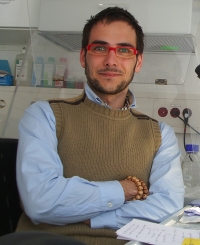
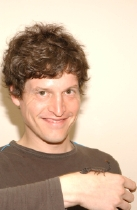
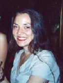
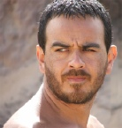

Visiting Students
Many graduate students from other institutions in the U.S. and abroad have visited the AMNH Arachnology Lab in the past, often funded in part by the AMNH Small Grants program (Annette Kade Fellowships, Collections Study Grants and Theodore Roosevelt Memorial Fund). If you are interested in applying for small grants to visit the AMNH, please visit the Richard Gilder Graduate School.
Jairo A. Moreno-González
Museu de Zoologia, Universidade de Sao Paulo, Brasil
PhD Student in 2019
Jairo is a PhD candidate at the Instituto de Biociencias, Universidad de Sao Paulo, Sao Paulo, Brazil. His research interests are focused on systematics and evolution of some arachnid orders such as Scorpiones (Buthidae: Tityus), and Pedipalpi (Schizomida, Uropygi and Amblypygi). His PhD project deals with the systematic revision of Tityus (Archaeotityus) using phenotypic and genetic evidence. He visited the AMNH for six months to examine material and score morphological characters for his thesis disseration.
Andria de Paula Santos da Silva
Instituto de Biociencias, Universidade de Sao Paulo, Brasil
PhD Student in 2019
Andria's PhD project deals with the systematics of the scorpion genus Ananteris (Buthidae). She visited the AMNH collection to examine a large number of these scorpions and generate morphological data.
Catalina Romero
Universidad Nacional, Colombia
PhD Student in 2019
Catalina spent a few months visiting the AMNH collections to examine specimens and collect morphological data for her PhD thesis on pseudoscorpions of the family Whitiidae.
Miguel Medrano
Museu Nacional, Universidade Federal do Rio de Janeiro, Brasil
PhD Student in 2019
Miguel spent a week at the AMNH examining type specimens for his PhD project on systematics of Cosmetidae (Opiliones, Laniatores).
Jahnavi Joshi
Natural History Museum, UK
Post-Doctoral Fellow in 2019
Jahnnavi visited the AMNH to examine a series of old centipedes for an ongoing research project at the Natural History Museum in London.
Aaron Goodman
California Academy of Sciences, USA
Master's Student from 2018 to 2019
Aaron is mainly interested in scorpion systematics. He came to the AMNH to generate morphological data for his master's dissertation on the genus Centruroides (Buthidae).
Stephan Schaffrath
University of Cologne, Germany
PhD Student from 2014 to 2014 and in 2018
For Stephan's PhD he visited the AMNH to receive training in DNA isolation, amplification and sequencing while investigating the chemical composition of scorpion venoms, with a view to using species-specific signatures for systematics. Later, Stephan returned to spend three months at the AMNH generating DNA and morphological data for his PhD thesis, focused on the scorpion genus Euscorpius (Euscorpiidae).
Carlos Albeto Martinez Muñoz
University of Turku, Finland
PhD Student from 2018 to 2019
Carlos' main research interest is focused on Myriapods. He came to the AMNH to examine and organize a series of old types described by Chamberlin.
Callum Mclean
Manchester Metropolitan University, UK
PhD Student in 2018
Callum visited the AMNH collections to examine various species of Amblypygi for his doctoral thesis, focused in biomechanics of predatory structures in arthropods.
Shlomo Cain
University of Haifa, Oranim, Israel
MSc Student in 2018
Shlomo visited the AMNH for three months to examine scorpions of the genus Buthacus (Buthidae) for his master's dissertation.
Ivan Magalhaes
Museo Argentino de Ciencias Naturales Bernardino Rivadavia, Argentina | CONICET | Doctoral fellow, Division Aracnologia
PhD Student in 2017
Ivan is a PhD candidate at the Museo Argentino de Ciencias Naturales "Bernardino Rivadavia", Argentina. His research focuses on spider systematics and its interface with their evolution and biogeography. His current project aims at resolving the systematics of crevice weavers (family Filistatidae), a group of shy and little-studied spiders most diverse in dry subtropical areas. His is also interested in the systematics of sand spiders (Sicarius) and spiny orb weavers (Micrathena).
Gerardo Contreras
Instituto de Biología, Universidad Nacional Autonóma de México (IBUNAM), Mexico City
Student from 2015 to 2017
Gerardo visited the AMNH to examine the collection of the North American scorpions of the genus Vaejovis and relatives, and score characters for his phylogenetic analysis. He returned a second time to generate DNA sequences in the molecular lab.
Rodrigo Monjáraz Ruedas
Instituto de Biología, Universidad Nacional Autonóma de México (IBUNAM), Mexico City
PhD student in 2014 and from 2016 to 2017
Rodrigo is studying the Schizomida fauna of Mexico. He visited the AMNH to examine the schizomid holdings of the collection and score morphological characters for his PhD research.
Tebogo Ledwaba
Ditsong National Museum of Natural History, Pretoria, South Africa
Student in 2017
Tebogo visited the AMNH for 2 months to digitize the AMNH collection of African scorpions and part of the Karoo BioGaps Grant funded by the South African National Research Foundation.
Jesus Alberto Cruz-López
Instituto de Biología, Universidad Nacional Autonóma de México (IBUNAM), Mexico City
Student in 2017
Jesus visited the AMNH to examine the collection of mexican harvestmen (Opiliones) as part of his dissertation research.
Ricardo Botero-Trujillo
Museo Argentino de Ciencias Naturales Bernardino Rivadavia, Argentina | CONICET | Doctoral fellow, Division Aracnologia | Theodore Roosevelt Memorial Grant
PhD student in 2016
Ricardo Botero Trujillo earned his biology degree from the Pontificia Universidad Javeriana, Bogotá. While an undergraduate student, he became interested in arachnids and started working on scorpions from his native country, Colombia. Gradually, hooded thick-spider (order Ricinulei) and sun-spiders (order Solifugae) became part of his research interests. After a 5-year period working in the pharmaceutical industry, Ricardo moved to Buenos Aires, Argentina to start his PhD His doctoral thesis consists of a taxonomic revision and phylogenetic analysis of the South American sun-spider family Mummuciidae. After being awarded a Theodore Roosevelt Memorial Grant, Ricardo visited the AMNH to study the collections of the groups he works on.
Dulce Flor Piedra
PhD student in 2016
Dulce came to examine the collection of Pseudoscorpiones for her dissertation research.

Francisco Salgueiro Sepulveda
Instituto de Biología, Universidad Nacional Autonóma de México (IBUNAM), Mexico City
PhD student in 2016
Francisco spent a month at the AMNH to study the collection of tetragnathid spiders for his dissertation.
Diego Barrales
Instituto de Biología, Universidad Nacional Autonóma de México (IBUNAM), Mexico City
Student in 2016
Diego visted the AMNH to examine material belonging to the species Mastigoproctus giganteus especially from localities within the United States. His findings will be incorporated into a morphological analysis used for a species delimitation project.
Samuel Mwangi
West Texas A&M University, Canyon, TX | National Museums of Kenya, Nairobi | Theodore Roosevelt Fellowship, Richard Lounsbery Foundation, Collections Study Grant
MSc student in 2005 and 2016
Samuel's MSc research focuses on the diversity of Kenyan scorpions of Kenya. As student at the National Museums of Kenya, Nairobi, he visited the AMNH for training in the Molecular Systematics Laboratory. He later returned to the AMNH to examine and photograph specimens for his Masters research at West Texas A&M University.
Bastian-Jesper Klußmann-Fricke
University of Rostock, Germany | Annette-Kade Fellowship
Student in 2015
Bastian visited the AMNH to study the respiratory and circulatory systems of camel spiders (Solifugae) using osmium tetroxide staining, corrosion casting, and microCT.
Gustavo Silva de Miranda
Natural History Museum of Denmark, University of Copenhagen
PhD student in 2014 and 2015
Gustavo visited the AMNH twice during his PhD to work on the collection of whip spiders (Amblypygi) for his revision of the family Charinidae. He was trained and generated DNA sequence data from charinid samples in the AMNH molecular lab.
Ingrid Catalina Romero Ortiz
Universidad Nacional de Colombia, Bogotá
Graduate student in 2015
Ingrid Catalina visited the AMNH to study the pseudoscorpion holdings and types as part of her graduate research on their taxonomy and systematics.
Daniela Ramírez
Instituto de Biología, Universidad Nacional Autonóma de México (IBUNAM), Mexico City
PhD student in 2014
Daniela visited the AMNH to examine the collection of tarantula spiders (Theraphosidae) as part of her PhD research.

Carlos Santibañez-López
Instituto de Biología, Universidad Nacional Autonóma de México (IBUNAM), Mexico City | Collections Study Grant, Theodore Roosevelt Memorial Grant
PhD student in 2009, from 2011 to 2012, and in 2014
Carlos revised the genus Diplocentrus (Diplocentridae) for his PhD and has studied the taxonomy of other scorpions occurring in Mexico. He first visited the AMNH examine the collection of Diplocentridae and later returned to extract, amplify and sequence DNA from Diplocentridae, and to score a morphological matrix for phylogenetic analysis.
Rene Barba
Instituto de Ecología y Sistemática, Havana, Cuba | Collections Study Grant
Student in 2019
Rene's research focuses on the pseudoscorpion families Sternophoridae, Olpiidae and Garypinidae. He visited the AMNH collections to examine and image type and nontype material from the Caribbean.
Roberta Engel
University of Connecticut, Storrs, CT
Student in 2012
Roberta's research focused on the systematics of pseudoscorpions. She visited the AMNH to examine the holdings of Australian pseudoscorpions.
Humberto Yoji Yamaguti
Universidade de São Paulo, Brazil
PhD student in 2009 and 2011
Humberto conducted a revision and phylogenetic analysis of the scorpion genus Rhopalurus (Buthidae) for his PhD He visited the AMNH to extract, amplify and sequence DNA from Rhopalurus samples and to use materials to score characters.
Patricia Carrera
Universidad Nacional de Cordoba, Argentina | Collections Study Grant
PhD student in 2009
Patricia studied mating behavior and sexual selection in bothriurid scorpions for her PhD She visited the AMNH to study the structure and homology of the scorpion hemispermatophore.
Jesus Alfonso Ballesteros Chavez
Instituto de Biología, Universidad Nacional Autonóma de México (IBUNAM), Mexico City | Collections Study Grant
MSc student in 2008
Jesus' MSc research aimed to reconstruct the phylogenetic relationships of the species belonging to the Neotropical whip spider genus Paraphrynus (Amblypygi) and its relationship with the rest of the genera of Phrynidae. He visited the AMNH to study the Neotropical phrynids. He then moved to George Washington University for a PhD on spiders.
Fabio Akashi Hernandes
UNESP: São Paulo State University, Brazil
MSc student in 2008 and 2016
Fabio's main interests are the taxonomy of plant mites (Bdellidae, Tetranychidae, Raphignathoidea) and feather mites (Astigmata), with an emphasis on the taxonomy and phylogeny of the genus Aponychus and related genera (Acari, Tetranychidae). He visited the AMNH to study mite types from several groups.
Andrés Ojanguren-Affilastro
Museo Argentino de Ciencias Naturales, Buenos Aires, Argentina | AMNH Collections Study Grant
PhD student in 2005 and 2007
Andrés' PhD research was a revision of the diverse South American bothriurid genus Brachistosternus. He visited the AMNH twice, the first time to extract, amplify and sequence DNA from bothriurid samples and a second time to continue his work on bothriurid systematics.
Alexander V. Gromov
Institute of Zoology, Almaty, Kazakhstan | Collections Study Grant and NSF BS&I Grant
Student in 2007
Alex is interested in central Asian solifuges and is revising the family Karschiidae. He visited the AMNH to work on the solpugid collections as part of the Global Survey and Inventory of Solifugae.
Carsten Kamenz
Humboldt University, Berlin, Germany | Annette Kade Fellowship
Student from 2005 to 2006
Carsten was a visiting student and a postdoc.
See Postdocs
|  | Valerio Vignoli
University of Siena, Italy
2004 & 2006
(Theodore Roosevelt Memorial Grant)
Valerio revised the taxonomy, ecology and biogeography of Euscorpius for his
PhD He visited the AMNH twice to revise the North American scorpion family Typhlochactidae. He also
participated in AMNH trips to Benin, Costa Rica, Morocco, Guinea-Bissau and Senegal.
|
|  | Christian Wirkner
Friedrich-Schiller University, Jena, Germany
2004
(Annette Kade Fellowship)
Christian studied the comparative morphology of arthropods from phylogenetic and
evolutionary perspectives and, more specifically, organ evolution and transformation, first at Jena
University before moving to Rostock University. He visited the AMNH to study the scorpion circulatory
system.
|
|  | Christina Bisulca
University of Delaware, Newark, DE
2003
(Winterthur Art Conservation Fellowship)
Christina visited the AMNH during her MSc in Art Conservation at the University of
Delaware, working with the Department of Natural Sciences Conservation. Bisulca surveyed the state of
curation of the non-spider Arachnid and Myriapod Collection, resulting in upgrades to the glassware and
closures housing the collection.
|
|  | Amazonas Chagas Jr.
Museu Nacional, Universidade Federal do Rio de Janeiro, Brazil
2003
(Collections Study Grant)
After his Masters, Amazonas visited the AMNH while in the USA to work at the North
Carolina State Museum, Raleigh. At the AMNH, Amazonas studied scolopendromorph centipedes from around
the world.
|